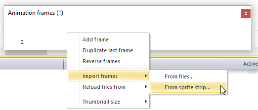
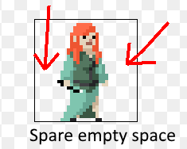
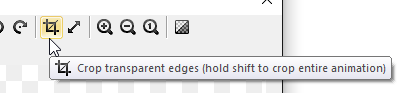
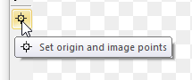
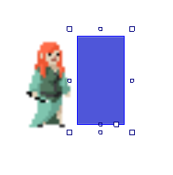

Microsoft Imagine Cup
Each year, Microsoft run a competition called Imagine Cup where you build an app that solves a real-world problem.
Entering Imagine Cup is a big commitment, but you can also enter Imagine Cup Junior - it's smaller and everyone has time to do it!
For Imagine Cup Junior, you make a game using Construct 2. It's fun and easy - let's try it out.
Construct 2
Construct 2 can make all kinds of 2D games. In this tutorial, you'll be taken through the basics of making a platform game in Construct 2.
Installing Construct 2
If you haven't already, grab a copy of the latest release of Construct 2 here. The Construct 2 editor is for Windows only, but the games you make can run on Windows, Mac, iPhones and Android devices.
Getting started
Now you're set up, launch Construct 2. Click the File button, and select New.
You will see the 'Template or Example' dialog box.
This shows a list of examples and templates. For now, just click on 'Open' at the bottom of the box to create a blank, empty new project.
You should now be looking at an empty layout - the design view where you create and position objects. Think of a layout like a game level or menu screen.
Size the layout
First of all, we need the layout (level) to be a bit bigger than the default. Left-click a space in the layout and the Properties Bar (left side of the screen) will display Layout Properties. Change the size of the level to 4000, 2048.
Adding tiles
Download this free tileset from OpenGameArt. (Go to that page then click on sheet1.png in the list of files.)
The image contains 64 different tiles.
double-click a space in the layout to insert a new object. Choose Sprite.
The mouse turns into a crosshair – Click somewhere in the middle of the screen.
The Image Editor opens up, with some windows to control animations. We are going to use animations in a weird way. We'll have an animation speed of 0 (paused). We'll have a different tile in each frame of the animation. Then, we can switch which tile is showing by changing the animation frame.
Right click a space in the Animation Frames pane at the bottom, and pick Import frames -> from sprite strip....

A file open dialog appears. Pick the file sheet1.png that you just downloaded. Construct 2 then needs to know how many tiles are in the image. You'll notice sheet1.png is an 8x8 grid of tiles. Enter 8 and 8 and click OK.

Give Construct 2 a moment to cut up the tiles. Now you should have all the tiles imported as animation frames! We don't need the first blank frame any more though, so right click on it and select delete.

You might want to resize the Animation Frames window bigger to get a better view of your tiles.
By default the animation speed is 5, which means tiles will keep changing their image. We want tiles to stay on their current frame, so let's make sure the animation speed is 0. Select the Default animation in the Animations window.

The Properties Bar now shows properties for the animation. Set its Speed property to 0.

Now the tiles won't keep changing their image - they'll stay on the same frame. Close the image editor by clicking the X on one of the three floating windows. Your Sprite tile should now be in the layout!

With it selected, change its name from Sprite to Tile in the Properties Bar. It's always a good idea to give objects an appropriate name.
Creating scenery from tiles
Notice the Sprite object has an Initial frame property. We can use this to switch the current tile. Select the Tile object and change its initial frame to 4:

Notice the image changes to reflect the tile in animation frame 4. This is how we can set up different tiles across the level.
Hold Control and click and drag the tile. You'll create another tile object. Do this again so we have 3 tiles in a row. Select the middle one and set its initial frame to 5. Do the same for the one on the right, but make its initial frame 6. You should now have something like this:

If you're wondering how to double-check which frame number corresponds to which tile, just double-click the tile object. The image editor comes up again with the animation windows where you can check. Remember you can control drag a tile and it makes another tile of the same type, so you don't need to keep typing in initial frames.
Enabling snap to grid
It's going to be a headache if we have to line up these tiles by hand! You can enable a grid to make this easier. In the ribbon, click View and enable Snap to Grid. The default grid size of 32x32 is fine.

Try dragging around the tiles now. You should find they snap to a 32x32 grid. Now it should be easy to snap the three tiles together.

Adding the Player sprite
Download this file: wizard_idle.png (credit: Animated Wizard by Calciumtrice, usable under Creative Commons Attribution 3.0 license.)
Let's add a sprite for the player. As before, double-click a space in the layout to insert a new object, and choose Sprite. When the crosshair comes up, click somewhere above the tiles. The Image Editor will appear.
Let's import the sprite strip for the player's idle animation. As before, right click the Animation Frames window and select Import Frames -> From sprite strip....

Choose the file wizard_idle.png. Note that's the complete sprite strip, not one of the animation frames. You can also import the sequence of files with the Import frames... option, but let's stick to this way for now.
Because the strip is not square, Construct 2 guesses the number of frames. It should correctly identify that there are 10 frames. Click OK and the frames are imported.
Note we still have the default blank frame at the start. Right click and delete that again. You should now have a sequence of animation frames for the player's Idle animation.
Cropping
You might notice the player has some empty transparent space around them. This is common after importing images. However, it's bad practice to leave it there - it wastes memory and can make collisions less reliable.

There's a quick way to get rid of it, though. Hold shift and press the Crop button on the image editor toolbar.

If you didn't hold shift, only that frame is cropped, so make sure you have shift down when you click it to crop the entire animation. The player image should now be nicely cropped, with no unnecessary space.
Setting the origin
The origin is the center, or "hot spot", of the object. In platformers, it's best to have the origin by the player's feet. This means if the animation changes height as it plays, they grow upwards, rather than in to the floor.
To set the origin, click the Set origin and image points tool in the image editor.

You should notice a black circle appear on the player. That's the origin. You can click to change it. However, we want it bottom-middle aligned. We can quickly assign this by hitting 2 on the num pad (if num lock is on). If you don't have a num pad (e.g. some laptops), you can right click Origin in the Image points window that popped up and choose Quick assign - Bottom.
It's a hassle to do this for each and every frame, but luckily there's another short-cut: in the Image points window that popped up, right click Origin and click Apply to whole animation.

Bingo! The origin should be set on every animation frame.
Loop the animation
Click the Default animation in the Animations window. Rename it to Idle.

In the Properties Bar, change the Speed of the animation to 9 and set Loop to Yes.

Right click the Idle animation in the Animations window and select Preview. You should see the player bobbing up and down gently. All done! Close the animation preview and the image editor. You should see your player in the layout.
Rename the object to Player in the Properties bar, since we're being organised.
Adding behaviors
Construct 2 comes with lots of behaviors. These make your objects work in pre-defined ways, which can save you lots of time.
The Platform behavior gives us simple 2D platform-game movement. However, there's one important tip for using it: the behavior should be applied to an invisible rectangle object, and the player positioned on top. The Platform behavior works much better if it's attached to a simple square object instead of a complex animated object.
Right click on this square and 'save as' to save a copy.
So we need to make an invisible square for the movement first. Double-click the layout to add a new sprite again, and this time import the square./p>
As before, we should have the origin at the bottom. So click Set origin and image points again and press 2 (or use the quick assign menu) to position the origin at the bottom.

Close the image editor. You should now see it in the layout. Resize it to roughly the same size as the player's body as shown below. You will have to untick 'Snap to grid' to do this, by clicking 'View' in the ribbon at the top of the screen then unticking 'Snap to grid'.

Rename this object to PlayerBox since it's the box for movement and collision testing for the player. Also, in the Properties Bar, set Initial visibility to Invisible since we don't want to see it.
Still in the PlayerBox's properties, click Add / Edit by Edit behaviors in the properties bar. In the dialog that appears, click the green plus button.

Double-click the Platform behavior.

You should see that some new properties for the platform movement have appeared in the Properties bar. You can tweak the movement settings like speed and acceleration. Let's make the jumps a little bit more snappy. Set the Jump strength to 800 and the Gravity to 2500.
We also want the screen to follow the player, so click the green plus again and add the Scroll To behavior.
Once you've added both behaviors, close the Player behaviors dialog.
Adding the Solid behavior
The platform movement needs to know what objects it can land on. The player will fall through any objects which don't have the Solid behavior. So this time select the Tile sprite and add a behavior for it, this time choosing the Solid behavior.
We just now need to position the player on top of the PlayerBox. Switch to Event Sheet 1. This is where we define the game's logic using Construct 2's event system.

Creating events
Events work by testing if a series of conditions have been met. If they have, the actions run.
In this case, we always want to position the player on top of PlayerBox. To do this, we should update its position every tick, or frame of the game.
Double-click a space in the Event Sheet View to create a new event.

Double-click the System object, which contains the Every tick condition.

Now we have an empty event which will run its actions every tick:

Click 'Add action'.

We want to position Player, so double-click 'Player'.

Double-click Set position to another object. For Object, click <click to choose> and pick PlayerBox. Leave Image point as 0 (that means the origin). Click 'Done'. The finished event should look like this:

Hopefully this makes sense: we always position the player on top of the PlayerBox object, which is the object with the movement.
Run the game by clicking the 'play' arrow in the title bar.

Move and jump with the arrow keys. You've got your first basic platformer up and running!
Problems
If you play around you might notice some problems:
1. The player doesn't face left.
2. There aren't any other animations yet.
Let's sort these out! First of all, number 1: let's get the player turning left and right.
First, switch back to the Layout view using the tabs at the top. Double click the layout to insert an object again, and insert the Keyboard object. Since it's just an input object you don't need to place it anywhere - it just enables keyboard input for the whole project.
Instead of creating a whole new animation with the player facing left, we can simply use Construct 2's Set mirrored action, which will automatically mirror the object to make it appear to be facing left instead of right.
Switch back to the Event Sheet. We're going to make a new event with the condition "On left arrow key pressed", and the action "Set player mirrored".
Double click a space to create a new event, or click the Add event link. Double click the Keyboard object, since it contains the On key pressed condition.

A list of all the Keyboard object's conditions appear. Double-click the On key pressed event.

Construct 2 needs to know which key you want to detect. Click the <click to choose> button, hit the left arrow key, then press OK. Click Done.

Now we want to add our action: "Set player mirrored". As before, first you pick the object, then you pick the type of condition or action, then you enter any parameters. Click the Add action link to the right of the event. (Make sure you don't accidentally click Add event!)
Double-click Player.
Double-click Set mirrored.
Leave the state on Mirrored and click Done.
You should now have this:

Now add another event - double click a space, or click the Add event link.
This time go through the process again, but make the event On right arrow key pressed, and set the player Not mirrored. You should end up with this:

Now when we press left the player's image will mirror, and when we press right it restores the right-facing image. Run the game and try it out!
Adding more animations
We're not going to add any more animations just now. But you could!
Room to move
Let's add some more platforms for the player to jump around.
Switch back to the Layout View where you can see the player and floor tiles. Click and drag to select all three tiles. Then, hold Control and drag the tiles to clone them. Do this a few times so there are some platforms to jump around. It might help to zoom out for this.

To give us a better view, let's also make the window size a bit bigger. Click the name of the project at the top of the Project Bar to show the project's properties. Change the Window Size to 800, 600.

Now we can jump around more and see how the player moves.
Adding an enemy
Let's add a new sprite for an enemy.
Download snail.png from OpenGameArt.
1. Add a new Sprite object in the layout.
2. Import the Enemies\Snail sprite strip.
3. Delete the first empty animation frame.
4. Set the animation to looping, speed 15.
5. Set the origin to the base of the snail image, and apply it to the whole animation.
6. Crop all the frames (shift + crop).
7. Close the animation editor and rename the object to 'SnailEnemy'.
8. Place it on a ground tile as shown.

Now we want to implement the following logic:
- If the player runs in to the snail from the side, they flash and get hurt.
- If the player jumps on top of the snail, the snail is killed.
To make the player flash, select the player and add the Flash behavior. Remember to select the actual player, not the PlayerBox object (since it is the visible player we want to flash). We'll use the 'Flash' action from this behavior in a moment.
Switch to the event sheet view, and add a new event:
PlayerBox -> On collision with another object -> SnailEnemy
This event runs when we collide with the SnailEnemy from any angle. We can then use sub-events to test whether the player is jumping on top or running in from the side. Let's first test if the player is above.
Add a sub event to the collision event:
PlayerBox -> Is falling
We should also test the player is actually above the enemy. This can prevent the snail accidentally being killed if we fall past it off a ledge, say. Right-click the 'Is falling' condition and select 'Add another condition'. Remember, all conditions must be met for the event to run. Add the condition:
PlayerBox -> Compare Y -> Less than, SnailEnemy.Y
The Y axis increases downwards, so if the player's Y co-ordinate is lower than the snail's, they are above it.
In this event, add the action:
SnailEnemy -> Destroy
We can also make the player bounce off it by adding another action:
PlayerBox -> Set vector Y -> -700
'Set vector Y' basically just sets the vertical speed of the platform movement; setting it to a negative value sets it upwards (again, the Y axis increases downwards), and 700 is a little less than the jump strength of 1100. So this will make the player bounce off as if they did a weak jump.

We're not quite done: right-click the margin of the 'Is falling' event (the space just to the left of the PlayerBox icon) and select Add -> Else. 'Else' is a special condition that runs if the previous event did not run. So this event will run if we collided with the snail but we weren't jumping on top of it - we ran in to it from the side, say. In this event we want the player to be hurt. Add the action
Player -> Flash -> (leave default values and click Done)
Remember the Flash behavior is in the Player object, not PlayerBox.

OK, so the player will never die, they'll just flash. But we've got the detection set up of whether they jumped on top or ran in to the side. This tutorial won't cover all the bells and whistles, but hopefully you can see where to create kill effects (try creating a 'smoke puff' sprite on the SnailEnemy when it is destroyed, using the SnailEnemy's 'Spawn object' action) and where to take off health (in the event that makes the player flash - you can learn about health using instance variables in the top-down shooter tutorial which you might want to look at afterwards).
Let's make the snail enemy move back and forth across the platform.
Moving the enemy
The main problem with moving the snail is how to detect when it's reached the edge of a platform. The easiest way to do this is with invisible 'edge' markers. These are just invisible sprites that flip the direction of the snail when it touches them.
We can also use the Platform behavior again for the snail. This is convenient because:
- it can get it moving left and right
- it will go up and down slopes just like the player can
- it will fall off ledges if you want it to
- if you want to make a jumping enemy, you can make the enemy automatically jump too using the 'simulate control' action.
Add the Platform behavior to the SnailEnemy sprite. Since we are not using complicated animations on this object, we can get away with using the platform behavior directly on the object without an invisible 'box' object. Note if you make a different platform game with enemies with complicated animations, you should use the same box technique we used on the player.
We don't want the player to control the SnailEnemy - we want to automatically control it. We can do this by setting its Default controls property to No, then using the Simulate control action. Since snails are also pretty slow, set the Max speed to 50 and its Acceleration and Deceleration to 100!
We'll also need our 'Edge' markers. Add a new Sprite object and just load in an opaque rectangle. Call it EdgeMarker. Size the object to about 40 x 40 and set its Initial visibility to Invisible so we don't see it. Place one at each end of the snail's platform like so: (don't forget you can create a new instance by control+dragging it)

The snail also needs to know which way it is currently moving - either left or right. We can do this with instance variables. These are simply numbers or text stored in each instance of the object. If we have multiple snails, they each store their instance variables separately. This allows them to have unique values for their health, current direction, and so on. A simple technique to control enemies automatically is to create an "action" instance variable which holds its current state. For example, it could be "run away", "chase player" or "idle". In this case we only need "left" and "right", but it's useful to set it up the same way.
Select the SnailEnemy object. In the properties bar, click Add / Edit under 'Instance variables'.

A dialog listing all instance variables for the object appears. Click the 'add' icon to add a new one. Set the name to action, the type to text, and the initial value to right (for moving right).

Click OK and close the instance variables dialog. Switch to the event sheet.
We want to implement the following logic:
- if action is "right", simulate the platform movement holding the 'right' key to move the snail right.
- if action is "left", simulate the platform movement holding the 'left' arrow key to move the snail left.
Also:
- if the snail hits the EdgeMarker, flip its action (if "left" set it to "right"; if "right" set it to "left").
We can set up the movement with the following two events:
Event: SnailEnemy -> Compare instance variable -> action equal to "right" (use double quotes here to indicate text)
Action: SnailEnemy -> Simulate control -> Right
It should be straightforward to do the same for left. We also want the image to mirror left and right like we did for the player. So add SnailEnemy -> Set mirrored in the "left" event, and SnailEnemy -> Set not mirrored in the "right" event. You should finish with this:

Now to flip the snail's direction on the edges:
Event: SnailEnemy -> On collision with another object -> EdgeMarker
Subevent: SnailEnemy -> Compare instance variable -> action equal to "right"
Action: SnailEnemy -> Set value -> action to "left"
Subevent: Else
Action: SnailEnemy -> Set value -> action to "right"
It's important to use Else here, because events are run from top-to-bottom. If instead of 'else' we said 'action equal to "left"', notice the previous event would have just set it to that. So it'd just set it right back again, having no overall effect. By using 'else', we prevent the second event running if the first was true.

Run the project. Notice the snail is moving back and forth on its platform. This makes it a bit harder to jump on! This is a very rudimentary "AI" system, but hopefully you can imagine that you could create more intelligent enemies by controlling the movement with more events, possibly even allowing them to fall off edges, or using other markers to trigger a jump to make it look like the enemy knew to jump up on to a platform.
Try creating a platform with two snails on it. Notice they control themselves individually, since they each have their own individual action instance variable holding their current state. Hopefully you can begin to see how important instance variables are for controlling instances independently - they don't all have to be doing exactly the same thing as each other!

Hopefully you now know enough to design a whole level! Here's a zoomed out level design I put together quickly while writing the tutorial. It might help show you some of the possibilities. Notice the use of markers across platforms to keep the snails on their platforms.

{kind=link}
Parallax
Conclusion
This tutorial covered a lot. Here are some of the key points:
- For the player's Platform behavior, always add the movement to an invisible box with no animations. Position the visible, animated player sprite on top of the box. This will prevent animations causing glitches in the platform movement.
- Levels can be built out of tiles.
- The Set mirrored action saves you having to make mirrored copies of all your animations.
- Enemies can also be controlled with the Platform behavior. Set Default Controls to No and use the Simulate control action to automatically control movement.
- You can detect if the player is falling on an enemy rather than running in to them by testing if they are both falling and above the enemy on the Y axis when colliding. Otherwise (using 'Else'), they must be running in to the enemy, and they should get hurt.
- Instance variables can store numbers or text unique to each instance of an object. This helps control objects individually, which is useful for "AI".
- Edge markers are a quick and easy way to make enemies go back and forth on a platform.
Obviously we have not made a full platform game! However, this tutorial has covered the most difficult bits, and the important essentials every platform game creator should know in advance. From here on hopefully you have an idea of how the rest of a platform game is going to come together. It takes time to get familiar with a complex development tool with Construct 2. However, experimenting can be fun, and teach you a lot! So spend a while playing around, breaking things, tweaking things, and see what you can come up with. Happy platforming!
Further reading
The Girl Code version of this tutorial removed some sections so we could go faster. They were on:
- adding a background
- Giving the background a parallax effect
- Adding animations to the player and triggering them in different situations (walking, jumping)
- Jump-through platforms
You may be interested in the alternative beginner's guide, which is a tutorial to make a top-down shooter. It covers some different points like making a heads-up display, and goes in to instance variables in some more detail too. These are both things that can be applied to platform games, so it would definitely be useful to go through it in addition to this tutorial.
Want to add music and sound effects? See Sounds & Music in the manual.
If you'd like to know more about how events work in Construct 2, see the section on How Events Work in the manual. It's highly recommended so you can get going quickly with your own projects! Then for even more information, don't forget there is complete documentation in the manual.